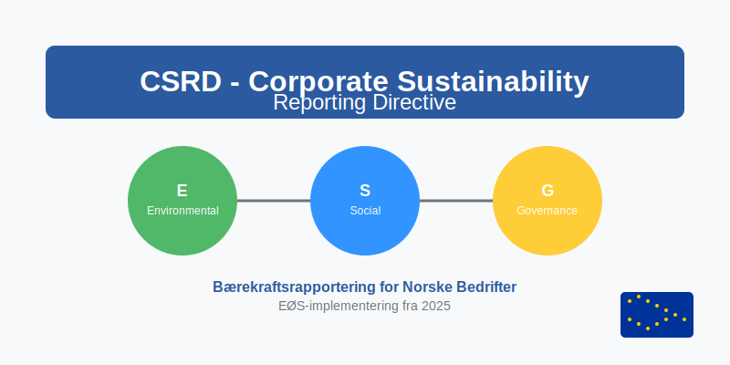
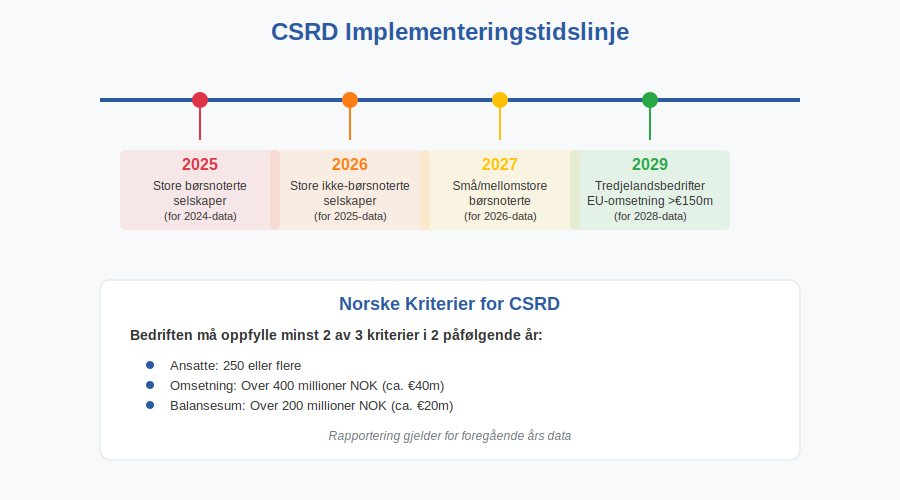
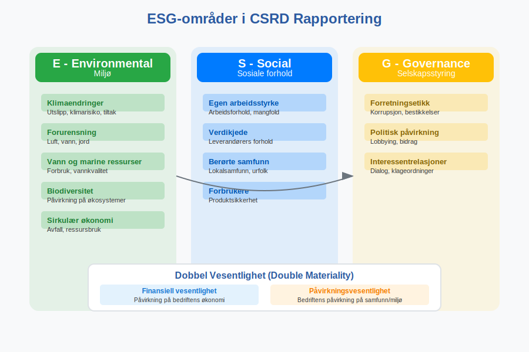
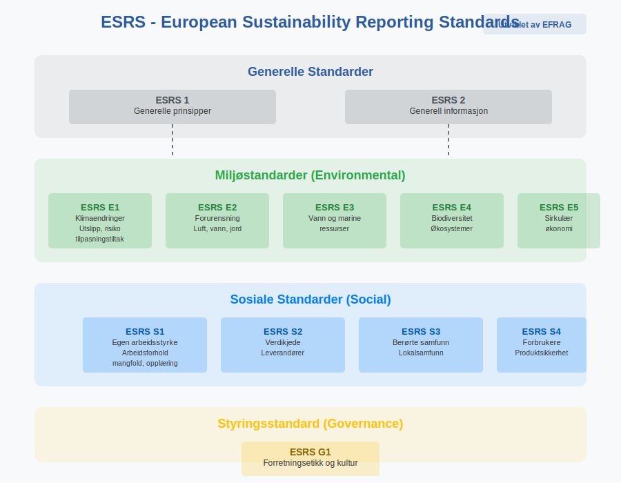
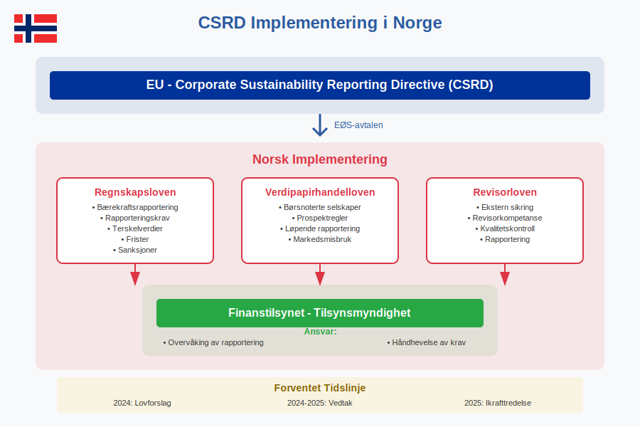
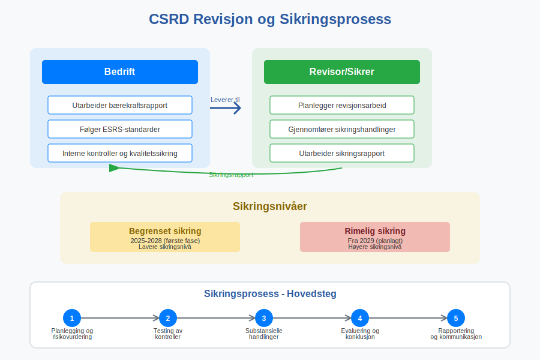
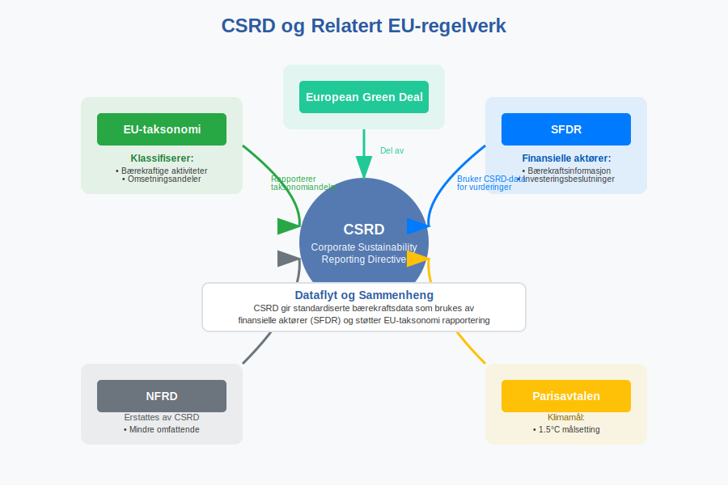
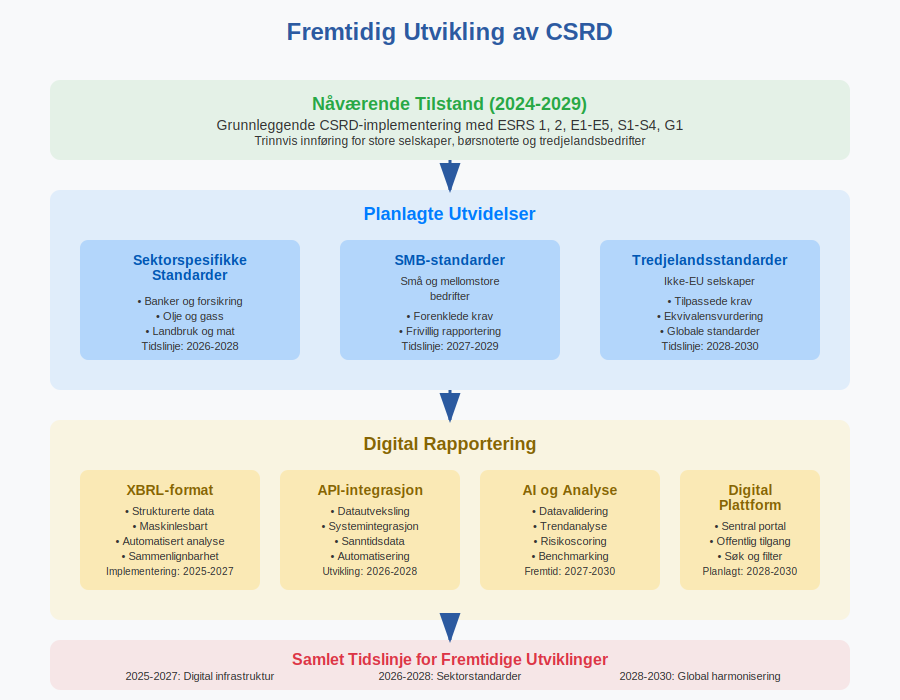

CSRD (Corporate Sustainability Reporting Directive) er EUs nye direktiv for bærekraftsrapportering som påvirker norske bedrifter gjennom EØS-avtalen. Direktivet krever omfattende rapportering om miljø, sosiale forhold og selskapsstyring (ESG) og representerer den mest omfattende endringen i bærekraftsrapportering i Europa.

Hva er CSRD?
Corporate Sustainability Reporting Directive (CSRD) er EUs direktiv som erstatter det tidligere Non-Financial Reporting Directive (NFRD). Direktivet trådte i kraft 5. januar 2023 og må implementeres i norsk lov gjennom EØS-avtalen.
Hovedformål med CSRD
CSRD har flere sentrale mål:
- Standardisere bærekraftsrapportering på tvers av EU/EØS
- Øke transparens om bedrifters bærekraftsprestasjon
- Støtte grønn omstilling og bærekraftige investeringer
- Redusere greenwashing gjennom strengere krav
- Harmonisere rapportering med internasjonale standarder

Hvem Omfattes av CSRD?
CSRD gjelder for norske bedrifter som oppfyller visse kriterier, med en trinnvis innføring over flere år.
Bedrifter som Omfattes
| Kategori | Kriterier | Rapporteringsstart |
|---|---|---|
| Store børsnoterte selskaper | Allerede omfattet av NFRD | 2025 (for 2024-data) |
| Store ikke-børsnoterte selskaper | ≥250 ansatte OG (omsetning >€40m ELLER balanse >€20m) | 2026 (for 2025-data) |
| Små og mellomstore børsnoterte | Børsnotert, ikke mikrobedrift | 2027 (for 2026-data) |
| Tredjelandsbedrifter | EU-omsetning >€150m | 2029 (for 2028-data) |
Norske Kriterier
For norske bedrifter gjelder følgende terskelverdier:
- Ansatte: 250 eller flere
- Omsetning: Over 400 millioner NOK (ca. €40m)
- Balansesum: Over 200 millioner NOK (ca. €20m)
Bedriften må oppfylle minst to av disse kriteriene i to påfølgende år.
CSRD Rapporteringskrav
CSRD krever rapportering innenfor tre hovedområder kjent som ESG (Environmental, Social, Governance).

Miljø (Environmental)
Miljørapportering omfatter:
- Klimaendringer: Utslipp etter GHG-protokollen, klimarisiko, tilpasningstiltak
- Forurensning: Luft, vann, jord
- Vann og marine ressurser: Forbruk, påvirkning på vannkvalitet
- Biodiversitet: Påvirkning på økosystemer
- Sirkulær økonomi: Avfallshåndtering, ressursbruk
Sosiale forhold (Social)
Sosial rapportering inkluderer:
- Egen arbeidsstyrke: Arbeidsforhold, mangfold, opplæring
- Verdikjede: Leverandørers arbeidsforhold
- Berørte samfunn: Lokalsamfunn, urfolk
- Forbrukere: Produktsikkerhet, tilgjengelighet
Selskapsstyring (Governance)
Styringsrapportering omfatter:
- Forretningsetikk: Korrupsjon, bestikkelser
- Politisk påvirkning: Lobbying, politiske bidrag
- Relasjoner til interessenter: Dialog, klageordninger
European Sustainability Reporting Standards (ESRS)
CSRD-rapportering skal følge European Sustainability Reporting Standards (ESRS) utviklet av EFRAG.

ESRS Standarder
| Standard | Område | Beskrivelse |
|---|---|---|
| ESRS 1 | Generelle prinsipper | Grunnleggende rapporteringsprinsipper |
| ESRS 2 | Generell informasjon | Strategi, styring, risikovurdering |
| ESRS E1-E5 | Miljø | Klima, forurensning, vann, biodiversitet, sirkulær økonomi |
| ESRS S1-S4 | Sosiale forhold | Arbeidsstyrke, verdikjede, samfunn, forbrukere |
| ESRS G1 | Selskapsstyring | Forretningsetikk og kultur |
Dobbel Vesentlighet
CSRD introduserer konseptet dobbel vesentlighet (double materiality):
- Finansiell vesentlighet: Hvordan bærekraftsfaktorer påvirker bedriftens finansielle resultater
- Påvirkningsvesentlighet: Hvordan bedriften påvirker mennesker og miljø
CSRD-rapportering er nært knyttet til EU-taksonomien, som definerer hvilke økonomiske aktiviteter som regnes som miljømessig bærekraftige.
Implementering i Norge
Norge må implementere CSRD gjennom EØS-avtalen og tilpasse norsk lovgivning.
Lovgivningsprosess
- Regnskapsloven: Må endres for å inkludere CSRD-krav
- Verdipapirhandelloven: Tilpasninger for børsnoterte selskaper
- Revisorloven: Krav til ekstern sikring av bærekraftsrapporter
Tilsynsmyndigheter
Finanstilsynet vil sannsynligvis få ansvar for:
- Overvåking av CSRD-rapportering
- Håndhevelse av rapporteringskrav
- Veiledning til norske bedrifter

Praktisk Gjennomføring
Forberedelser for Bedrifter
Norske bedrifter bør starte forberedelsene tidlig:
- Kartlegg om bedriften omfattes av CSRD-kravene
- Gjennomfør vesentlighetsanalyse for å identifisere relevante temaer
- Etabler datainnsamlingssystemer for ESG-data
- Utvikle rapporteringsrutiner og interne kontroller
- Sikre kompetanse innen bærekraftsrapportering
- Planlegg ekstern sikring av rapporter
Datainnsamling og Systemer
Effektiv CSRD-rapportering krever:
- Integrerte systemer som kobler regnskapsdata med ESG-data
- Automatiserte prosesser for datainnsamling
- Kvalitetssikring av data og beregninger
- Dokumentasjon av metoder og forutsetninger
Revisjon og Sikring
CSRD krever ekstern sikring av bærekraftsrapporter, tilsvarende revisjon av årsregnskapet.
Sikringsnivåer
- Begrenset sikring: Første fase (2025-2028)
- Rimelig sikring: Planlagt fra 2029
Revisorens Rolle
Revisorer må:
- Utvikle kompetanse innen bærekraftsrapportering
- Etablere revisjonsmetodikk for ESG-data
- Sikre kvalitet i bærekraftsrapporter
- Rapportere avvik og forbedringsområder

Konsekvenser for Norske Bedrifter
Kostnader og Ressurser
CSRD-implementering medfører betydelige kostnader:
- Systemutvikling: 500.000 - 2.000.000 NOK
- Kompetanseutvikling: 200.000 - 500.000 NOK årlig
- Ekstern sikring: 100.000 - 500.000 NOK årlig
- Løpende drift: 1-3 årsverk for store bedrifter
Forretningsmuligheter
CSRD kan også skape muligheter:
- Bedre tilgang til kapital gjennom bærekraftige investeringer
- Konkurransefortrinn gjennom transparens
- Forbedret risikostyring og operasjonell effektivitet
- Sterkere merkevare og omdømme
Sammenheng med Andre Regelverk
CSRD må sees i sammenheng med annet regelverk:
EU-taksonomi
EU-taksonomien klassifiserer bærekraftige økonomiske aktiviteter og krever rapportering om:
- Andel omsetning fra taksonomikvalifiserte aktiviteter
- Andel investeringer (CapEx) i bærekraftige aktiviteter
- Andel driftskostnader (OpEx) knyttet til bærekraft
SFDR (Sustainable Finance Disclosure Regulation)
SFDR påvirker finansielle aktører og deres rapportering om bærekraftsfaktorer i investeringsbeslutninger.

Forberedelser og Anbefalinger
Handlingsplan for Bedrifter
-
Kartlegging (2024):
- Vurder om bedriften omfattes
- Identifiser rapporteringsfrister
- Gjennomfør gap-analyse
-
Planlegging (2024-2025):
- Utvikle bærekraftsstrategi
- Etabler styringsstruktur
- Planlegg systemløsninger
-
Implementering (2025-2026):
- Implementer datainnsamlingssystemer
- Utvikle rapporteringsrutiner
- Sikre kompetanse og ressurser
-
Rapportering (fra 2025):
- Gjennomfør første rapportering
- Sikre ekstern revisjon
- Kontinuerlig forbedring
Kritiske Suksessfaktorer
- Ledelsesforankring og tydelig ansvar
- Tverrfaglig samarbeid mellom regnskap, bærekraft og IT
- Kvalitetssikring av data og prosesser
- Kontinuerlig kompetanseutvikling
- Proaktiv tilnærming til regelverksutvikling
Fremtidige Utviklinger
Utvidelser av CSRD
EU planlegger flere utvidelser:
- Sektorspesifikke standarder for banker, forsikring og olje/gass
- Standarder for SMB (små og mellomstore bedrifter)
- Tredjelandsstandarder for ikke-EU selskaper
Digitalisering
Digital rapportering blir sentralt:
- XBRL-format for strukturert rapportering
- Maskinlesbare data for automatisert analyse
- API-er for datautveksling

Konklusjon
CSRD representerer en fundamental endring i hvordan norske bedrifter må rapportere om bærekraft. Direktivet krever omfattende forberedelser og betydelige investeringer, men kan også skape verdifulle forretningsmuligheter.
Nøkkelpunkter
- Trinnvis innføring fra 2025 til 2029
- Omfattende rapporteringskrav innen ESG
- Ekstern sikring av bærekraftsrapporter
- Betydelige kostnader men også muligheter
- Tidlig forberedelse er kritisk for suksess
Norske bedrifter som omfattes av CSRD bør starte forberedelsene umiddelbart for å sikre regelverksetterlevelse og maksimere forretningsmulighetene som følger av økt transparens og bærekraftsfokus.
For bedrifter som ikke direkte omfattes av CSRD, kan det likevel være lurt å følge utviklingen, da krav fra kunder, investorer og andre interessenter kan gjøre bærekraftsrapportering relevant også for mindre bedrifter.